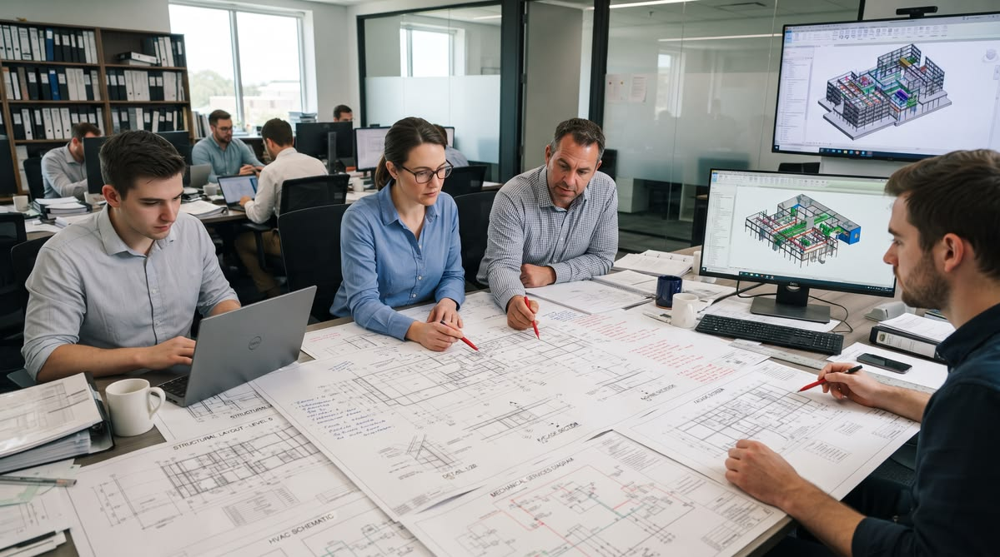

História com contexto
Uma narrativa que pode ser atualizada sem depender de um selo de aniversário ou de números fixos.

QUEM SOMOS
Uma nova leitura para a apresentação institucional da Brascol.
A EMPRESA
Construção e reforma são o ponto de partida desta reimaginação institucional.
Este estudo utiliza a estrutura do site de referência para organizar a história da empresa, sua atuação e seus caminhos de atendimento. Não acrescenta fatos, certificações ou indicadores que não tenham sido verificados.
Na versão oficial, este espaço poderá receber o histórico aprovado pela empresa, identificação dos responsáveis e informações institucionais atualizadas.
Leia as informações no site oficial ↗O QUE ORIENTA ESTE REDESIGN
Uma narrativa que pode ser atualizada sem depender de um selo de aniversário ou de números fixos.
Textos e espaços que convidam à leitura em telas grandes e pequenas.
Uma base azul e branca, com novas proporções e uma hierarquia mais clara.
Cada página com um papel específico e destinos de navegação consistentes.
PESSOAS E PARCERIAS
O institucional também precisa acolher quem procura oportunidades ou deseja apresentar sua empresa.
Carreiras e fornecedores ↗DA IDEIA AO PRÓXIMO PASSO